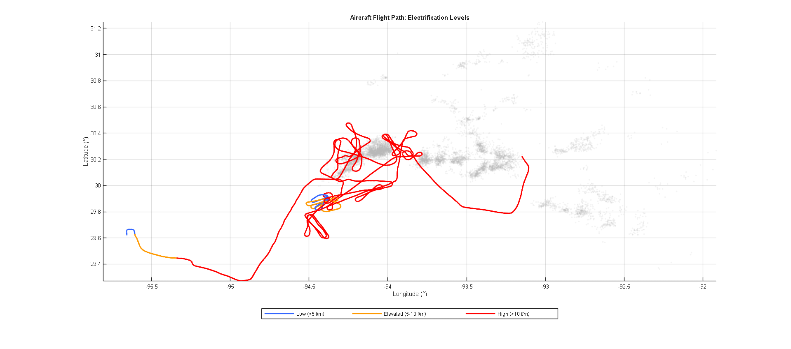
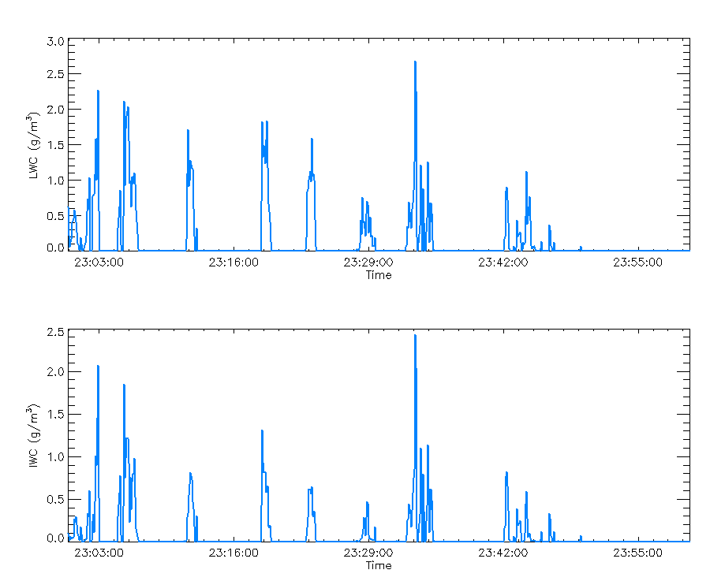
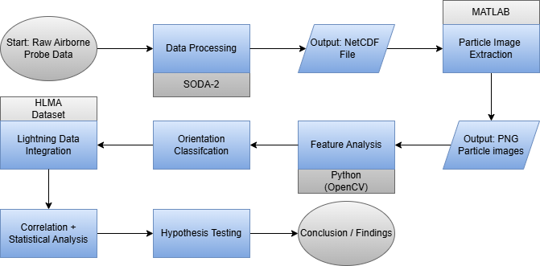

Integrated Microphysics • Lightning Mapping • Orientation Dynamics
This project presents a data-driven framework for analyzing atmospheric electrification using airborne microphysics, radar observations, and lightning activity. The system integrates multiple data sources into a unified Electrification Risk Index (ERI) that quantifies storm intensity and charge separation potential.
Using high-resolution particle imagery from optical array probes (2D-S and HVPS-3), ice particle orientation and microphysical properties are extracted and combined with lightning flash rates and atmospheric dynamics to characterize electrified regions within convective storms.
The resulting ERI enables both spatial and temporal analysis of storm electrification, highlighting high-risk regions and capturing the evolution of electrical activity throughout the storm lifecycle.
This platform serves as both a visualization tool and an analytical framework, demonstrating how microphysical observations can be directly linked to lightning behavior and used to estimate electrification risk in real time.
The Electrification Risk Index (ERI) quantifies storm electrification intensity by integrating microphysical properties, lightning activity, and atmospheric dynamics into a single normalized indicator.
Higher ERI values correspond to regions with increased charge separation potential, typically associated with strong updrafts, high ice particle concentrations, and elevated lightning flash rates.
Peak ERI (Storm Core): 0.42 — High Electrification
Current ERI at aircraft position: 0.04 (Low)
Classification: Low (0–0.15) | Moderate (0.15–0.30) | High (>0.30)


The ERI field highlights a concentrated region of elevated electrification coinciding with the storm core. The aircraft trajectory intersects this region during peak activity, where ERI values increase significantly.
Time-series analysis shows a clear rise in electrification intensity during the mature stage of the storm, followed by a gradual decay as convective activity weakens.
Key observations reveal strong relationships between particle orientation, microphysical properties, and lightning activity.


Workflow integrating probe data, feature extraction, classification, and lightning correlation.



Collaboration with NRC Canada and Carleton University.